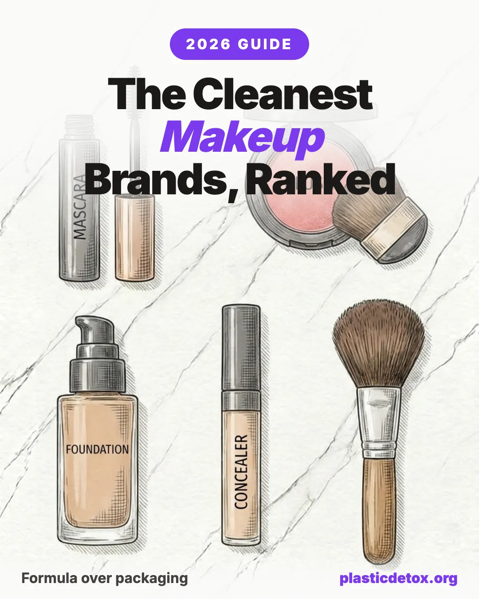

Top Non Toxic Makeup Brands (2026): Certified Organic, Plastic Free, and Refillable

The 30 Second Summary
- Buy the formula, not the box. The microplastics and toxins that reach your body come from what you spread on your skin, not the tube it ships in. A pretty bamboo compact full of silicones is still silicones on your face.
- The microplastics to avoid are silicones and synthetic film formers: dimethicone, cyclopentasiloxane, acrylates copolymer, polyethylene, nylon 12. Every brand below is free of them.
- Certification hierarchy: COSMOS Organic (about 95 percent natural, strictest) beats NSF/ANSI 305 (70 percent) beats NATRUE Natural beats retailer "clean" labels, which allow synthetic polymers.
- Packaging matters most for oil based formulas. Balms and cream sticks pull plasticizers out of soft plastic, so glass and metal are a real upgrade there. Water based liquids just need an airless pump for hygiene.
Most "clean beauty" shopping happens on the front of the box. Bamboo lids, recycled cartons, a "plastic negative" badge. Those things are real, but they answer a question about the planet, not a question about your body. The ingredients you press into your skin every morning are a different story, and they are the ones almost nobody reads. This guide fixes the order of operations: formula first, then packaging, with seven brands that pass on both, plus two more that are certified but not currently shipping to the US, and the specific products we verified are free of silicones and synthetic polymers.
Why the Formula Matters More Than the Packaging
Here is the uncomfortable truth about a lot of eco makeup. A refillable bamboo compact filled with dimethicone, acrylates copolymer and polyethylene still lays synthetic polymers on your face every single day. The packaging kept plastic out of a landfill. It did nothing to keep plastic off your skin.
Leave on cosmetics are the highest exposure category in your bathroom. Foundation and concealer cover large areas of the face for hours. Lip products are partly eaten. Loose powders can be inhaled. Eye products sit on some of the thinnest, most permeable skin on the body. Whatever is in the formula has all day to interact with you. The tube, meanwhile, only has to survive the trip home.
Packaging plastic is an end of life problem for the ocean. Formula polymers are a right now problem for your skin. If you can only fix one, fix the formula. A certified organic formula in a plastic tube protects your body better than a recycled plastic compact full of silicones.
This is why we rank by certification and INCI first and treat packaging as a tie breaker. It is also why we still rate the packaging for every brand below, because once the formula is clean, better packaging is a genuine bonus, and for a few formula types it becomes a health issue in its own right. More on that in a moment.
The Microplastics Hiding in Your Makeup
When people picture microplastics in cosmetics they think of the plastic scrub beads that got banned years ago. Those were the easy ones. The microplastics still in makeup are dissolved into the formula itself, as synthetic film formers and silicones that give products their slip, blur and long wear. They are petroleum derived, they do not biodegrade, and they rinse off your face straight into the water system.
On an ingredient list they read like this. If you see any of these, you are looking at a synthetic polymer:
The silicones give the slip in conventional primers and foundations. The film formers give the "budge proof" in long wear formulas. Both are petroleum derived and neither belongs in a certified organic product.
The fastest way to avoid all of them is to let a certifier do the reading for you. A real organic seal bans this entire category, which is why certification is the backbone of this guide.
Makeup is only one shelf. Our companion guide, Microplastics in Cosmetics and Personal Care Products, lists every synthetic polymer that hides across skincare, hair and body products and shows you exactly how to read an INCI label. Pair it with Clean Products That Are Not Actually Clean to see why so many "natural" labels do not hold up.
The Certification Hierarchy, Decoded
Not all "clean" claims carry the same weight. Most are set by the company selling you the product. Only a few are set by an independent third party that audits the actual formula. Here is the ladder we use, strictest at the top.
Five brands here hold a third party organic seal. Four more are partly organic or independently certified natural: cleaner than almost anything at a drugstore, but a step below a full organic mark. Two more certified organic brands, Zao and Couleur Caramel, do not currently ship to the US, so we note them at the end of the Tier 1 list but do not feature their products. We are honest about which is which on every card.
When Packaging Actually Matters: The Oil vs Water Rule
Formula comes first, but packaging is not irrelevant. It earns its weight in three situations, and the chemistry of the formula decides which one you are in. The single most useful thing to know is whether a product is water based or oil based.
1. Hygiene and stability, for water based formulas
If aqua or water sits at the top of the ingredient list, the product is water based. Water breeds microbes, so these formulas need preservatives and are vulnerable to contamination. An airless pump or a tube protects them. An open jar invites fingers, air and bacteria, which is why a water based cream in a jar spoils faster. Here packaging is a hygiene question, and a recycled plastic airless pump does the job as well as glass. The material barely matters.
2. Plasticizer migration, for oil based and waterless formulas
This is the case where packaging becomes a health issue, not just an eco one. Oil based and waterless products, balms, cream sticks, oil foundations and tinted lip balms, contain fat soluble ingredients that pull plasticizers such as phthalates and BPA type compounds out of soft plastic far more readily than water based formulas do. An oily balm in a soft plastic pot is the worst pairing. The same balm in glass, aluminum or metal is genuinely safer. It is also why you should check refill systems: a beautiful bamboo case does nothing if the oily cream sits directly against a plastic refill pan.
3. Light and air, for anything oil based
Oil based formulas go rancid with light and air, and plant actives like vitamin C degrade in clear packaging. Opaque glass, metal and airless designs extend shelf life. Powders, being waterless and stable, mostly just need a pressed compact over a loose jar so you are not inhaling or spilling them.
Packaging matters less
Foundations and tints with water high on the list. The concern is hygiene, so prioritize an airless pump or tube over an open jar. A recycled plastic pump is fine here, the material barely matters.
Packaging matters a lot
Balms, cream sticks and oil foundations pull plasticizers out of soft plastic and oxidize in light. Prioritize glass, aluminum or metal. This is where packaging becomes a health choice, not just an eco one.
And powders: waterless and stable, so choose a pressed compact over a loose jar, mostly to control mess and avoid inhaling the product.
With that framework in place, here are the brands. Each one is silicone free and free of synthetic polymers. We note the certification, rate the packaging, summarize what real reviewers praise and complain about, and pick three hero products we verified are clean.
Tier 1: Certified Organic Brands
Each of these holds a genuine third party organic seal. They are the closest thing to a guarantee that the formula is free of silicones and synthetic polymers.
1. INIKA Organic COSMOS Organic
The most sensitive skin friendly of the group, with a full face range. COSMOS Organic, plus vegan and cruelty free, on jojoba, avocado, shea and mineral pigments. No silicones or film formers.
Packaging: Good. Mostly aluminum, glass and recycled plastic, not refillable. The "Plastic Neutral" badge is an offset, not plastic free.
- COSMOS Organic certified, the strictest common seal, and the easiest certified organic brand here to buy in the US
- Mineral and plant oil formulas (jojoba, avocado, shea) that suit sensitive skin and the eye area
- Full range including foundation, eye, lip and mascara, plus vegan and cruelty free
- Liquid foundation runs sheer, not medium to full coverage
- Called pricey for the amount and pan size
- Narrow shade range, some shades read lighter in person

Loose Mineral Foundation
Loose mineral powder on a mica, zinc oxide and titanium dioxide base. No talc, no silicones or polymers. Buildable, works on oily skin.
View →
Long Lash Mascara
Carnauba wax and castor oil with magnolia bark and vitamin E. Tubing type formula, no silicones or polymer film formers.
View →
Certified Organic Lipstick
Certified organic lipstick on coconut oil, shea butter and candelilla wax with vitamin E. Hydrating satin finish, no silicones or polymers.
View →2. Kjaer Weis CCPB Organic
The premium, most refillable option. Certified organic by CCPB (COSMOS family), free of silicones, parabens and synthetic fragrance. Cream textures reward a little blending.
Packaging: Excellent. Refillable metal compacts plus compostable paper refills. The best packaging in this guide.
- CCPB certified organic (COSMOS family), the same 95 percent tier as COSMOS, silicone free on certified organic plant oils and waxes
- Refillable metal compacts plus compostable paper refills, the most complete refill system in this guide
- Cream textures with a dewy, skin like finish
- Premium price for small amounts, refill model adds upfront cost
- Cream textures must be built well or can look patchy
- Popular shades go out of stock, some service complaints

Lip Gloss (Courage)
Castor, jojoba and macadamia oils with shea butter and hyaluronic acid. Silicone free, non sticky shine. Contains a natural fragrance.
View →
Cream Blush (Sun Touched)
Mica and organic almond, castor and jojoba oils with beeswax. No dimethicone and no added fragrance. Refillable metal compact.
View →
Cream Bronzer (Enchant)
Cream bronzer on organic plant oils and waxes with mineral pigment. Silicone free, refillable metal compact.
View →3. Ogee NSF/ANSI 305
Certified organic sculpting sticks, done silicone free with plant oils and waxes instead of the usual siloxanes. Carries a real NSF/ANSI 305 organic seal, at a 70 percent threshold below COSMOS.
Packaging: Fair. Plastic sticks and a glass lip oil bottle, recycled cartons, no refills. Oil based sticks would be better in glass or metal.
- Carries a real NSF/ANSI 305 organic seal, a genuine third party mark, though at a 70 percent threshold below the COSMOS group
- Silicone free cream sticks that use plant oils and waxes for slip, not siloxanes
- Hydrating, oil based formulas that condition while worn
- Strong essential oil scent despite unscented positioning
- Premium price for small sizes
- Cream sticks can crease and need setting on oily skin

Tinted Sculpted Lip Oil
Olive, coconut and jojoba oils with squalene and hyaluronate in a glass bottle. No silicones, hydrogenated castor oil as thickener.
View →
Sculpted Face Stick (Copper)
Olive, jojoba and coconut oils with beeswax and mineral mica. Plant derived alkanes for slip, not silicone. No synthetic polymers.
View →
Sculpted Complexion Foundation
Cream foundation stick on beeswax, jojoba and mineral pigment with silica. Silicone free, no synthetic polymers. Buildable coverage.
View →Zao (COSMOS Organic, refillable bamboo) and Couleur Caramel (Ecocert COSMOS) are both genuinely clean, certified organic brands worth knowing about. We are not featuring their products here because neither currently ships to the United States: Zao ships within France only, and Couleur Caramel has suspended US deliveries. If you are outside the US, both are worth a look.
Tier 2: Partly Organic and Certified Natural Brands
These four are cleaner than almost anything at a drugstore and all silicone and polymer free, but they sit one rung below a full organic seal: either organic at the ingredient level rather than the whole product, or independently certified natural rather than organic. We say which on each card.
4. Araza Ingredient Organic + Paleo
A tiny US indie with strict sourcing: organic at the ingredient level (Oregon Tilth, USDA) and the first Paleo Certified makeup. Clean INCI, but not vegan (beeswax, carmine).
Packaging: Fair. Glass jars for the creams, a plastic sifter for the powder, no take back program.
- Organic at the ingredient level (Oregon Tilth and USDA) and the first Paleo Certified makeup, though not a whole product organic seal
- Short oil and mineral formulas (MCT oil, jojoba, rosehip, zinc oxide) with no synthetic preservatives
- Cream foundation and concealer come in glass, the better material for oil based formulas
- Short shelf life, use within about 12 months, no synthetic preservatives
- Small indie, limited retail, thin third party review volume
- Coconut heavy, naturally scented, foundation can fade in heat

Coconut Cream Concealer
Coconut MCT oil, zinc oxide, beeswax, jojoba and rosehip. Same clean cream base as the foundation, no silicones or polymers.
View →
Jojoba Mineral Powder Foundation
Sericite, boron nitride, zinc oxide and silica with jojoba oil. No silicones or polymers. Contains silk and pearl, so not vegan.
View →
Coconut Cream Foundation
Coconut MCT oil, non nano zinc oxide, beeswax and rosehip in a glass jar. Zero synthetic polymers, oil based, so glass is a plus.
View →5. Juice Beauty Made With Organic
Built on certified organic plant juices, with some USDA products. Made with organic rather than a whole product seal, but the makeup is verified silicone and film former free.
Packaging: Fair. Glass and PET with metal and plastic parts, only partly recyclable.
- Made with certified organic plant juices, some products USDA certified, though the finished makeup is not a whole product organic seal
- Silicone free and free of synthetic film formers, foundation and mascara included
- Plant pigment color instead of petroleum dyes, over a hydrating juice base
- Makeup is the weaker half versus the skincare
- Watery foundation that separates and can oxidize darker
- Limited shade range and tricky online shade matching

PHYTO-PIGMENTS Ultra-Natural Mascara
Carnauba wax, acacia and cellulose gums, tapioca starch as natural film formers. Purple carrot pigment, no acrylates or silicones.
View →
PHYTO-PIGMENTS Last Looks Cream Blush
Coconut, castor and jojoba oils with carnauba wax and plant pigment. No silicones or synthetic polymers.
View →
PHYTO-PIGMENTS Flawless Serum Foundation
Coconut alkanes replace the silicone, with Rosa Gallica plant pigment. No acrylates, carbomer or PEG. The brand's hero item.
View →6. Dr. Hauschka NATRUE Natural
The large, stable choice. NATRUE Certified Natural, free of silicones, PEGs and synthetic preservatives, with most plant material organic or biodynamic. Natural tier, not a full organic seal.
Packaging: Good. Glass for fluids, recyclable compacts, FSC cartons. Bullets still use some plastic.
- NATRUE Certified Natural, independently audited and free of silicones, PEGs and synthetic preservatives, though the natural tier is not a full organic seal
- Plant oil and wax formulas that double as skincare
- Large, long established maker with consistent batch to batch quality
- Coverage is light to medium and not very buildable
- Loose powder pan is messy, can read drying
- Limited shades, herbal rose scent not for everyone

Defining Mascara
Castor oil, beeswax and rose wax with xanthan gum as the natural film former. No acrylates or silicones. Lightly fragranced.
View →
Liquid Eyeliner
Jojoba and castor oils with candelilla and beeswax, acacia gum and carrageenan for a natural film. No silicones or polymers. Lightly fragranced.
View →
Eye Definer
Wax and oil eye pencil with mineral pigment. No silicones or synthetic polymers. Smooth, blendable line.
View →7. Lavera NATRUE Natural
The budget pick, about half the price of Dr. Hauschka. NATRUE Certified Natural, free of silicones and microplastics. Natural tier, not organic.
Packaging: Fair to Good. FSC cartons and glass where possible, though bullets and wands use plastic.
- NATRUE Certified Natural, independently audited and silicone free, with a few items reaching the higher NATRUE Organic tier
- The lowest price tier in this guide, around drugstore levels
- Family owned maker with in house production
- Foundation shades run dark and orange, poor fair and olive match
- Foundation can ball up over moisturizer and slide during the day
- Light coverage overall

Soft Eyeliner
Jojoba and sunflower oil pencil with iron oxide pigment and vitamins E and C. Free from silicones and microplastics.
View →
Volume Mascara
Shea butter, sunflower oil and organic carnauba wax with mineral pigment. Vegan, no silicones or microplastics.
View →
Hyaluron Liquid Foundation
Water and sunflower oil base with coco caprylate, glycerin, tapioca starch and hyaluronate. No silicone, no microplastic.
View →Full Brand Comparison Table
Every brand here is free of silicones and synthetic polymers. What separates them is the strength of the certification and the packaging.
Swipe the table sideways to see every column →
| Brand | Certification | Packaging | Silicones / Polymers | Price |
|---|---|---|---|---|
| INIKA Organic | $$ | |||
| Kjaer Weis | $$$ | |||
| Ogee | $$$ | |||
| Araza | $$ | |||
| Juice Beauty | $$$ | |||
| Dr. Hauschka | $$$ | |||
| Lavera | $ |
For the easiest certified organic buy in the US, start with INIKA Organic. For the best packaging and finish and you do not mind the price, Kjaer Weis. For clean on a budget, Lavera. If you are also rethinking your SPF, our mineral sunscreen guide covers tinted mineral bases that work under makeup.
Frequently Asked Questions
Does the formula or the packaging matter more for non toxic makeup?
The formula matters more. The synthetic polymers and toxins that reach your body come from what you spread on your skin, not the tube it shipped in. A refillable bamboo compact filled with dimethicone, acrylates copolymer and polyethylene still lays synthetic polymers on your face every morning. Packaging plastic is an environmental problem at end of life, but it does not enter your bloodstream. Buy the formula first, then choose the better packaging.
What makes a makeup ingredient a microplastic?
The microplastics in makeup are mostly synthetic film formers and silicones: dimethicone, cyclopentasiloxane and other siloxanes, acrylates copolymer, polyethylene, nylon 12, polymethyl methacrylate, and PVP. These are petroleum derived, they do not biodegrade, they can persist on skin and in waterways, and they are exactly what a certified organic seal bans. Check the INCI list, not the marketing on the front of the box.
What is the strictest certification for clean makeup?
COSMOS Organic is the strictest common seal. It requires roughly 95 percent or more natural origin content, bans silicones and most petroleum ingredients, and sets a minimum organic percentage. NSF/ANSI 305 is a genuine whole product organic seal but at a lower 70 percent threshold. NATRUE Certified Natural is independently audited and bans silicones and PEGs, but its natural tier is not the same as an organic seal. Brand or retailer clean standards such as Sephora Clean are marketing rules set by the seller and routinely allow synthetic polymers.
When does makeup packaging actually matter for your health?
Packaging matters most for oil based and waterless formulas such as balms, cream sticks and oil foundations. Fat soluble ingredients pull plasticizers like phthalates out of soft plastic far more readily than water based formulas do, so glass, aluminum and metal are a genuine upgrade there. For water based liquids the concern is hygiene and stability, where an airless pump beats an open jar and the material matters less. Powders are waterless and stable, so for them packaging is mostly about mess and inhalation.
What is the best certified organic makeup brand?
For a strict formula, INIKA Organic and Kjaer Weis both hold COSMOS family organic certification and are silicone free, with Kjaer Weis leading on refillable packaging. Ogee carries a genuine NSF/ANSI 305 organic seal at a lower threshold. All three are free of silicones and synthetic polymers and available in the US. Two other certified organic brands, Zao and Couleur Caramel, are also clean but do not currently ship to the United States.
Are Dr. Hauschka and Lavera certified organic?
No. Both are NATRUE Certified Natural, which is independently audited and bans silicones, PEGs and synthetic preservatives, but their makeup carries the natural tier, not a full organic seal. They are excellent clean, silicone free and microplastic free choices, and both are large, stable brands, but they sit one step below the certified organic group on the certification ladder.
Is refillable makeup worth it?
For reducing packaging waste, yes. Kjaer Weis uses refillable metal compacts and compostable paper refills, so you keep a durable case and replace only the pan. It is an upfront cost that pays off over time. Just remember refillable packaging does not change what is in the formula, so a refillable compact is only a clean choice if the product inside is silicone and polymer free to begin with.
Is silicone free makeup better?
For avoiding microplastics, yes. Silicones such as dimethicone and cyclopentasiloxane are synthetic polymers that do not biodegrade. They give the slip and blur many conventional primers and foundations rely on, so silicone free formulas can feel different and may need setting on oily skin, but they keep synthetic polymers off your face and out of waterways. Every brand in this guide is silicone free.
Sources
Related Articles
- Microplastics in Cosmetics and Personal Care Products: What to Avoid and Safer Alternatives (2026)
The full list of synthetic polymers hiding in makeup, skincare and hair products, and how to read an INCI list. - Clean Products That Are Not Actually Clean (2026)
Why so many "clean" and "natural" labels are marketing, and which certifications actually mean something. - Best Mineral Sunscreens (2026): Chemical vs Mineral and Everything You Need to Know
The clean tinted mineral bases that work under makeup, and the fake mineral sunscreens to skip. - How to Avoid BPA and Phthalates in Everyday Products: A Room by Room Guide (2026)
Phthalates are the plasticizers that migrate from soft packaging into oil based products. Where else they hide.